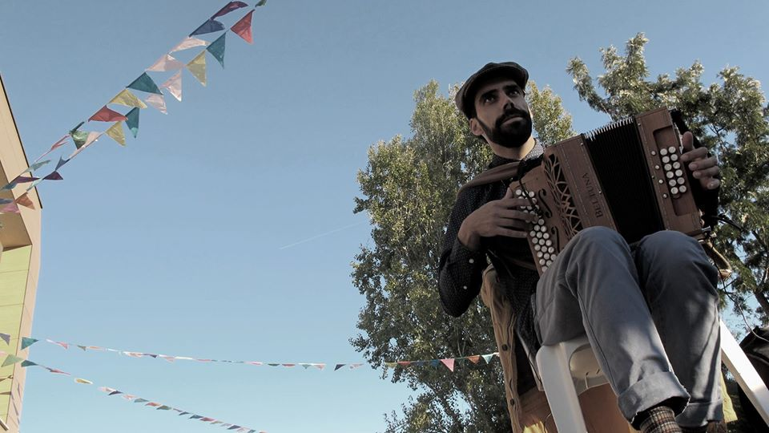
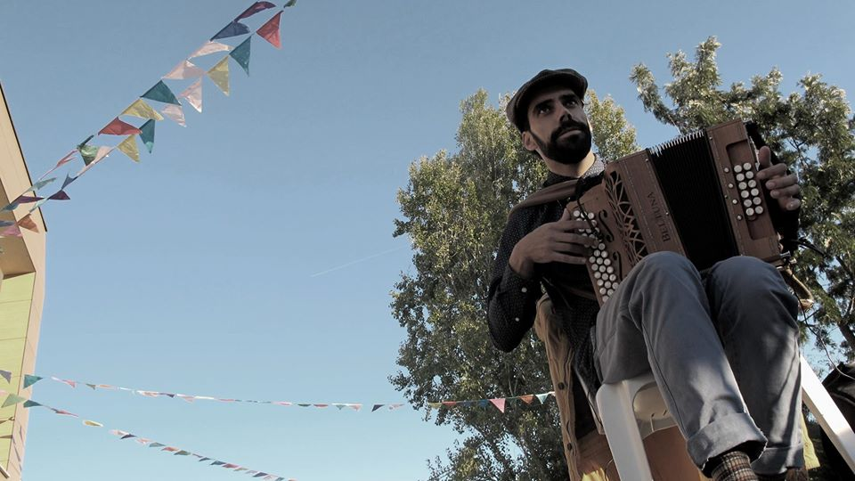

Musicoteràpia Azores - Autònom 23/2023
Pràctica clínica de musicoteràpia, individual i grup, en diversos centros. Centre Ocupacional, Centre Geriàtric i Centre per a persones amb malaltia Machado Joseph. Práctica clínica amb infants amb retràs global del desenvolupament i TEAS.
Associació ALPI, L'Hospitalet de Llobregat
Des de 08/02/2021 a 28/02/2023
Monitor ocupacional responsable per dinamitzar activitats d'ocupació terapèutica, artesanía i estimulació cognitiva amb un grup d'adults amb diversitat funcional. Responsable per les sessions de musicoteràpia amb grups.
Fundació Boscana - Barcelona
Des de 01/09/2021 a 28/06/2022
Responsable de l'àrea de musicoteràpia a la institució i d'elaborar i executar plans d'intervenció terapèutics en grup amn els usuaris.
Associació Terapèutica d'Évora - Portugal
Des de 01/04/2011 a 28/06/2018
Responsable de l'àrea de musicoteràpia a la institució i d'elaborar i executar plans d'intervenció terapèutics amb els usuaris amb deficiència intel·lectual i multideficiencia. Estimulació cognitiva i habilitats socials.
EXPERIÈNCIA EN VOLUNTARIAT I LIDERATGE
- Formació de formadors amb la ONG “Músics sense Fronteres”.
- Mentor del projecte MoNDA – Musicoteràpia en el neurodesenvolupament i arts Projeto MoNDA
- Creador i membre de diversos grups música tradicional com a músic d'acordió diatònic
- Participació com a artista en diverses edicions del Festival Andanças.
- Membre de la junta de l'ONG Pédexumbo, associació per a la promoció de la dansa i música tradicional.
Imatges
 
